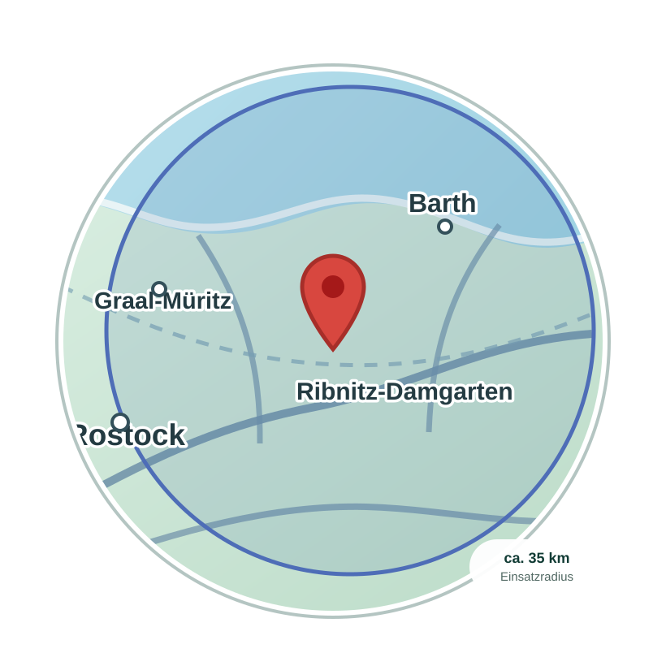

01
Soziotherapie
Soziotherapie nach § 37a SGB V als Krankenkassenleistung.
Soziotherapie & Alltagshilfe
Individuelle Unterstützung für Menschen mit psychischen Erkrankungen – aufsuchend, alltagsnah und verlässlich.
Ich begleite Sie dabei, Schritt für Schritt wieder mehr Struktur, Sicherheit und Selbstbestimmung in Ihren Alltag zu bringen.
Meine Angebote
Soziotherapie nach § 37a SGB V als Krankenkassenleistung.
Alltagshilfe und Entlastungsleistungen nach § 45b SGB XI.
Strukturierung des Alltags, Krisenbegleitung und Netzwerkarbeit.
Aufsuchende Unterstützung – regional und flexibel.
Tiergestützte Elemente mit Besuchshund „Leyla“.
Haltung & Arbeitsweise
SozioVital steht für eine verlässliche und alltagsnahe Begleitung von Menschen mit psychischen Belastungen. Die Arbeit ist geprägt von Einfühlungsvermögen, klarer Kommunikation und einem respektvollen Umgang auf Augenhöhe. Vertrauen entsteht durch Beständigkeit – nicht durch Druck.
Die fachliche Grundlage bildet eine Soziotherapeutin mit langjähriger Erfahrung im psychosozialen Bereich. Die erste Ausbildung zur Krankenschwester erfolgte an der Uniklinik Greifswald. Weiterführende Qualifikationen wurden am Diakonischen Bildungszentrum Schwerin sowie am Bildungszentrum für Gesundheits- und Sozialberufe Stralsund zur Fachpflegekraft für Psychiatrie und zur Soziotherapeutin erworben.
Begleitet werden Menschen, deren psychische Situation den Alltag aktuell stark erschwert – etwa dann, wenn Struktur fehlt oder bestehende Hilfsangebote nicht mehr selbstständig genutzt werden können. Die Unterstützung erfolgt begleitend, orientierend und dort strukturierend, wo es sinnvoll und gewünscht ist. Tempo und Umfang richten sich stets nach der jeweiligen Person.
Angehörige werden auf Wunsch einbezogen. Ärzt:innen, Therapeut:innen und unterstützende Einrichtungen werden als wichtige Partner verstanden und nach Möglichkeit in den Prozess eingebunden.

Schematische Darstellung, nicht maßstabsgetreuEinsatzgebiet
SozioVital ist im Landkreis Vorpommern-Rügen tätig, mit einem Einsatzradius von etwa 35 Kilometern rund um Ribnitz-Damgarten.
Weiterführende Information
Hinweise zur Verordnung, Zusammenarbeit und Durchführung.
Schnellkontakt
Sie erreichen SozioVital telefonisch, per E-Mail oder über WhatsApp.
Bitte übermitteln Sie bei der ersten Kontaktaufnahme per E-Mail oder WhatsApp keine sensiblen Gesundheitsdaten.